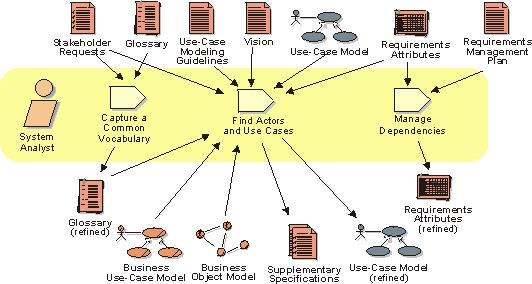

CASE-vahendite Tutvustus:
CASE-vahendid (Computer-Aided Software Engineering) on tarkvaratehnika tööriistad, mis aitavad arendajatel tõhusamalt hallata ja automatiseerida tarkvaraarenduse elutsüklit. CASE-vahendid jaotatakse sageli kaheks: lower CASE ja upper CASE vahenditeks. Lower CASE vahendid keskenduvad arenduse hilisematele etappidele, nagu koodi genereerimine ja testimine, samas kui upper CASE vahendid keskenduvad arenduse varasematele etappidele, nagu süsteemi analüüs ja disain.
Lower CASE vahendid
Lower CASE vahendid toetavad tarkvaraarenduse hilisemaid etappe, sealhulgas koodi genereerimist, testimist ja hooldust. Need vahendid aitavad arendajatel suurendada tootlikkust ja vähendada vigade arvu, automatiseerides mitmesuguseid arendustegevusi.
Nõuete Haldamise Vahend: Jira

Jira on projektijuhtimise tarkvara, mis võimaldab nõuete haldamist koos ülesannete jälgimise ja prioriteetide seadmisega.
- Nõuete ja ülesannete haldamine
- Agile metoodikate tugi
- Integreerimine teiste arendusvahenditega
Koodi Genereerimise Vahend: Modelio

Modelio võimaldab mudeli põhjal genereerida Java, C++ ja teisi programmeerimiskeeli.
- Mudelite põhjal koodi genereerimine
- Toetus UML ja BPMN modelleerimisele
- Integreeritud projektijuhtimise tööriistad
Testimise Vahend: Selenium

Selenium on avatud lähtekoodiga raamistik veebipõhiste rakenduste testimiseks.
- Veebirakenduste automatiseeritud testimine
- Toetus mitmele programmeerimiskeelele
- Integreerimine pideva integreerimise tööriistadega
Upper CASE vahendid
Upper CASE vahendid toetavad tarkvaraarenduse varasemaid etappe, sealhulgas süsteemi analüüsi, nõuete määratlemist ja disaini. Need vahendid aitavad arendajatel struktureerida ja kavandada tarkvarasüsteeme tõhusamalt ja täpsemalt.
Projekti Planeerimise Vahend: Microsoft Project

Microsoft Project on projektijuhtimise tööriist, mis aitab planeerida, hallata ja jälgida projekte.
- Gantti diagrammid ja ajakava haldamine
- Ressursside ja eelarve haldus
- Raportite ja aruannete genereerimine
Süsteemi Modelleerimise Vahend: IBM Rational Rose

IBM Rational Rose on visuaalne modelleerimisvahend, mis toetab UML-i ja aitab arendajatel luua süsteemi arhitektuuri ja disaini.
- Toetus UML diagrammidele
- Visuaalne disain ja analüüs
- Integreerimine teiste arendusvahenditega
Nõuete Halduse Vahend: IBM Rational DOORS

IBM Rational DOORS on võimas tööriist keeruliste nõuete struktureerimiseks ja jälgimiseks.
- Keeruliste nõuete haldamine
- Jälgitavus ja muutuste juhtimine
- Integreerimine teiste IBM Rational tööriistadega